Soru 1Cevap: C
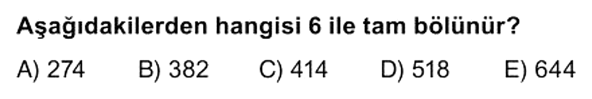
Çözüm
- 6 ile bölünme: hem 2 hem 3 ile bölünmeli (2 ve 3 aralarında asal).
- Hepsi çift; rakamlar toplamları: 13, 13, 9, 14, 14.
- Yalnız 414'ün rakamları toplamı 3'ün katı → C.
Cevap: C
Soru 2Cevap: D
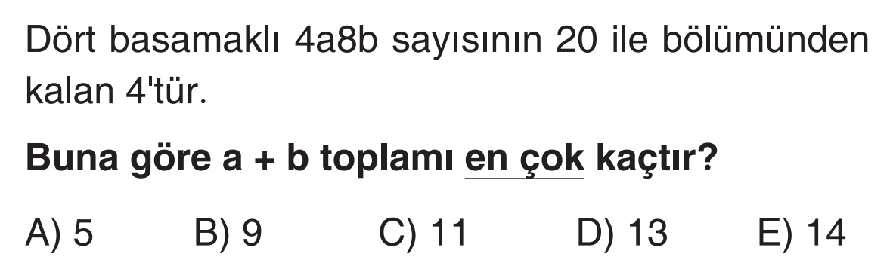
Çözüm
- 20 ile bölümden kalan, son iki basamağın ($\overline{8b}$) 20 ile bölümünden kalana eşittir.
- $\overline{8b}\equiv4 \pmod{20}$ → $\overline{8b}=84$ → $b=4$; $a$ serbest.
- En çok $a+b=9+4=13$ → D.
Cevap: D
Soru 3Cevap: D
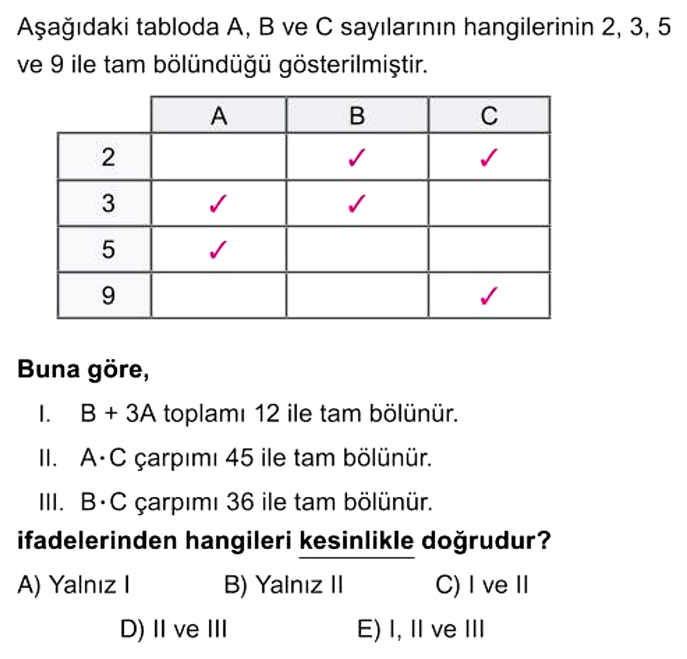
Çözüm
- Tablodan: A, 3 ve 5'e (15'e); B, 2 ve 3'e (6'ya); C, 2 ve 9'a (18'e) bölünür.
- II: $A\cdot C$, $15\cdot18=270$'in katı → 45'e bölünür. III: $B\cdot C$, $6\cdot18=108$'in katı → 36'ya bölünür.
- I kesin değil (ör. $A=15$, $B=6$: $51$) → II ve III → D.
Cevap: D
Soru 4Cevap: E
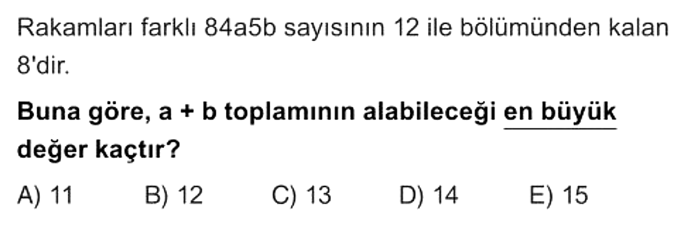
Çözüm
- 12 ile kalan 8 → 4 ile kalan 0, 3 ile kalan 2.
- 4: $\overline{5b}$ 4'ün katı → $b\in\{2,6\}$; 3: $8+4+a+5+b\equiv2 \Rightarrow a+b\equiv0 \pmod 3$.
- Rakamlar farklı: $b=6$, $a=9$ → $a+b=15$ en büyük → E.
Cevap: E
Soru 5Cevap: C
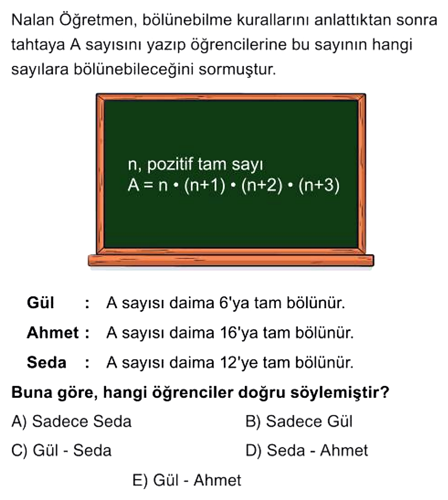
Çözüm
- Ardışık 4 tam sayının içinde 2'nin ve 4'ün katı birer sayı, en az bir 3'ün katı var: çarpım daima $2\cdot4\cdot3=24$'ün katı.
- 24'e bölünen sayı 6'ya ve 12'ye de bölünür.
- 16'ya bölünmeyebilir ($1\cdot2\cdot3\cdot4=24$) → Gül ve Seda → C.
Cevap: C
Soru 6Cevap: A
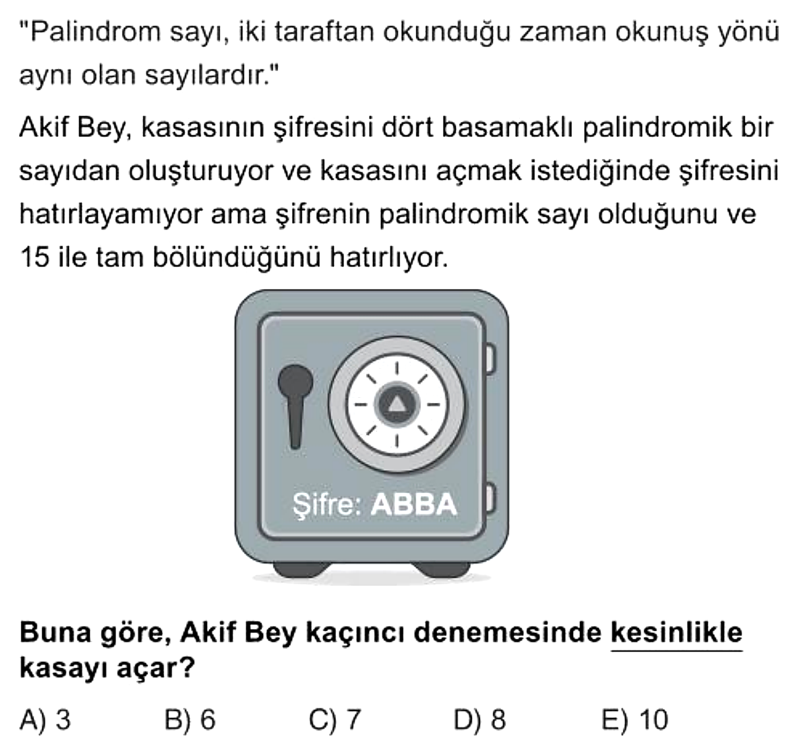
Çözüm
- ABBA, 15'e (3 ve 5'e) bölünür; son rakam A ve ilk rakam olduğundan $A=5$.
- $5BB5$: $10+2B$ 3'ün katı → $B\in\{1,4,7\}$.
- 3 olası şifre → en geç 3. denemede açar → A.
Cevap: A
Soru 7Cevap: C
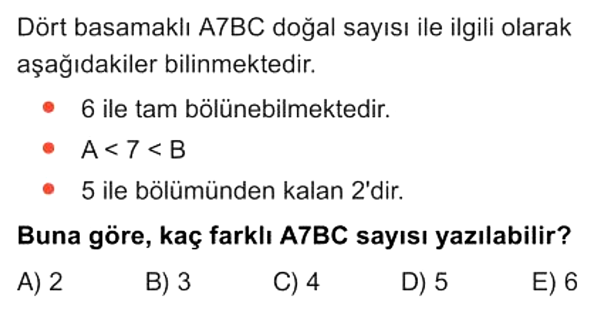
Çözüm
- 6 ile bölünür → çift; 5 ile kalan 2 → $C\in\{2,7\}$ → $C=2$.
- $A<7\lt B \Rightarrow B\in\{8,9\}$; 3: $A+7+B+2$ 3'ün katı → $A+B\equiv0$.
- $B=8$: $A\in\{1,4\}$; $B=9$: $A\in\{3,6\}$ → 4 sayı → C.
Cevap: C
Soru 8Cevap: D
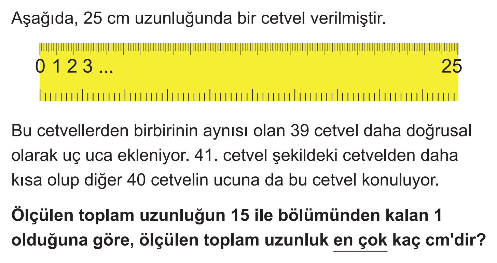
A)1006B)1011C)1016D)1021E)1024
Çözüm
- 40 cetvel $40\cdot25=1000$ cm; 41. cetvel $c<25$ cm.
- $1000+c\equiv1 \pmod{15}$; $1000\equiv10$ → $c\equiv6 \pmod{15}$ → $c\in\{6,21\}$.
- En çok $1000+21=1021$ cm → D.
Cevap: D
Soru 9Cevap: B
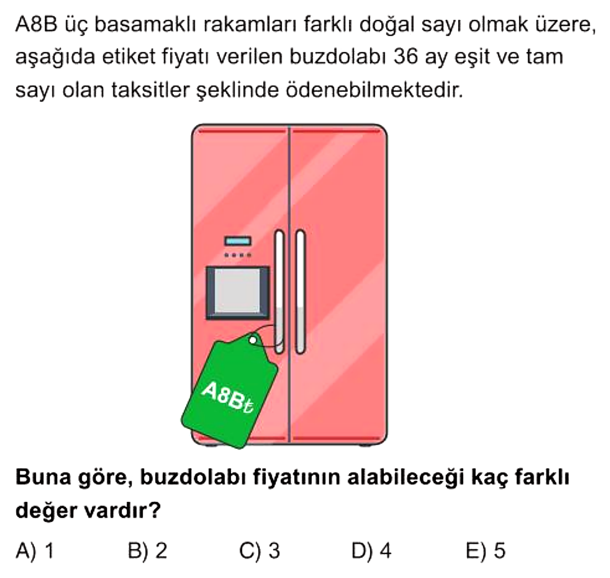
Çözüm
- 36 eşit taksit → fiyat 4 ve 9 ile bölünür.
- 4: $\overline{8B}$ → $B\in\{0,4,8\}$; 9: $A+8+B$ 9'un katı → 180, 684, 288.
- Rakamlar farklı: 288 olmaz → 2 değer → B.
Cevap: B
Soru 10Cevap: A
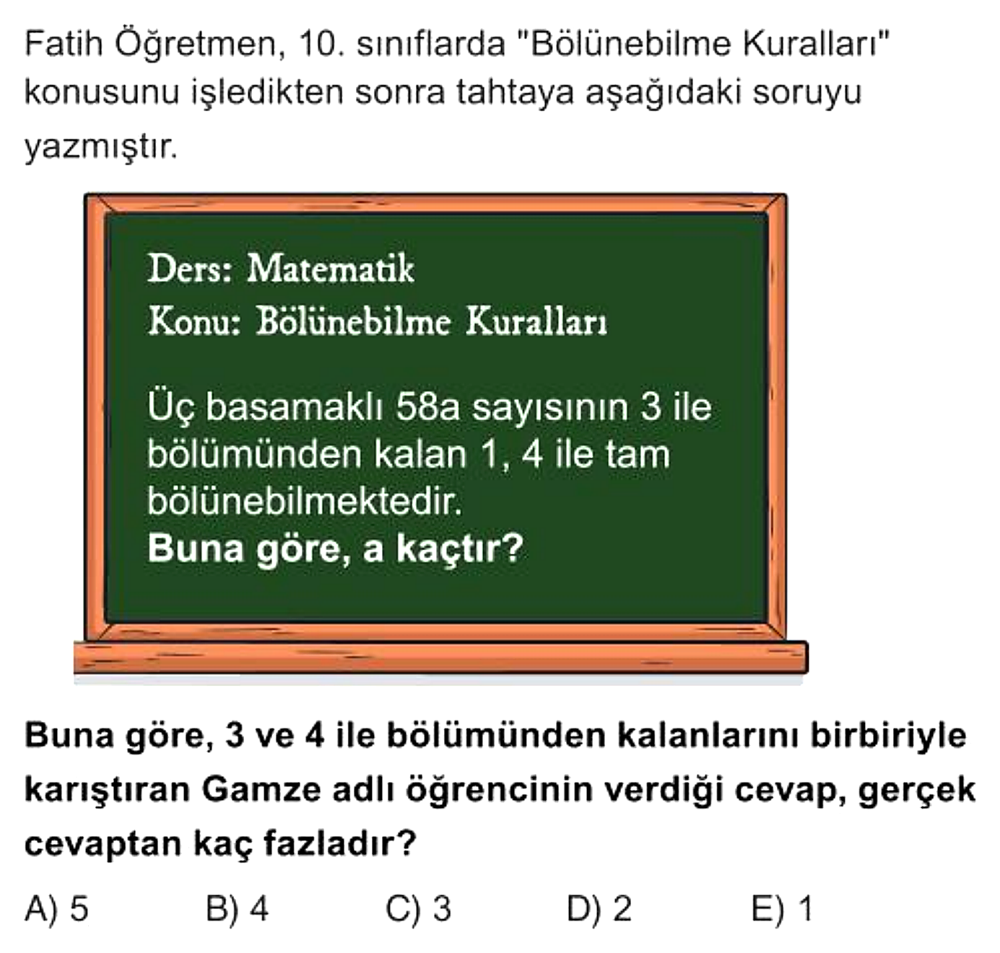
Çözüm
- Doğru: 3 ile kalan 1 → $13+a\equiv1 \Rightarrow a\equiv0$; 4 ile bölünür → $\overline{8a}$: $a\in\{0,4,8\}$ → $a=0$.
- Gamze: 3 ile kalan 0, 4 ile kalan 1 → $a\in\{2,5,8\}$ ve $a\in\{1,5,9\}$ → $a=5$.
- Fark $5-0=5$ → A.
Cevap: A
Soru 11Cevap: D
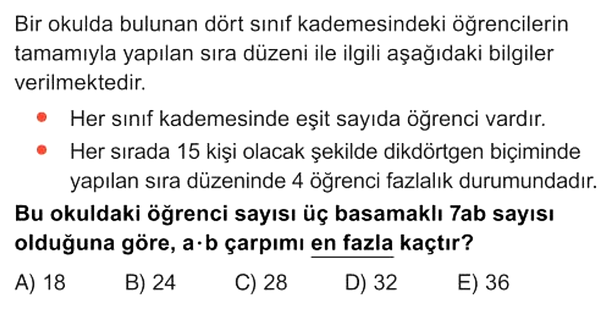
Çözüm
- 4 kademeye eşit → 4'e bölünür; 15'lik sıralarda 4 artar → 15 ile kalan 4 (5 ile 4, 3 ile 1).
- 5 ile kalan 4 ve çift → $b=4$; 4: $\overline{a4}$ → $a$ çift; 3: $7+a+4\equiv1 \Rightarrow a\equiv2$.
- $a\in\{2,8\}$; $a\cdot b$ en fazla $32$ → D.
Cevap: D
Soru 12Cevap: D
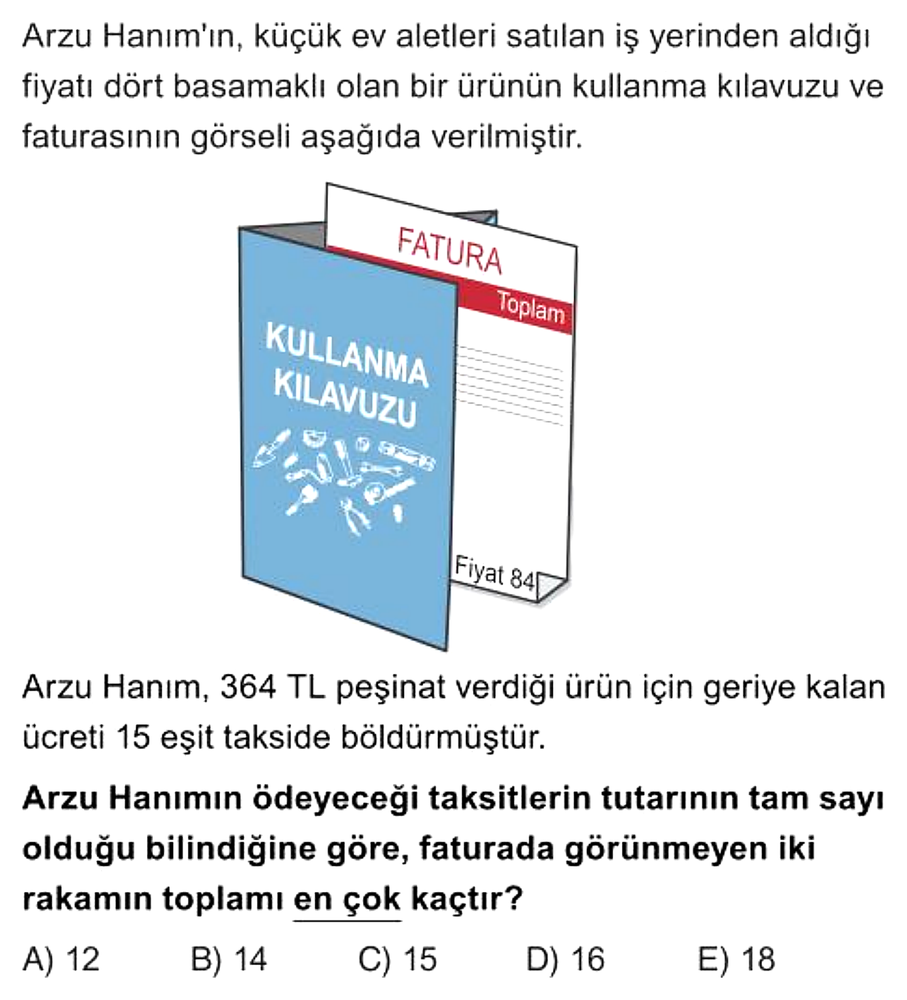
Çözüm
- Fiyat $\overline{84ab}$; peşinattan sonra kalan 15 eşit tam taksit → $\overline{84ab}-364$, 3 ve 5 ile bölünür.
- 5: $b-4$ 5'in katı → $b\in\{4,9\}$; 3: $8+4+a+b\equiv3+6+4 \Rightarrow a+b\equiv1 \pmod 3$.
- En çok $b=9$, $a=7$: $a+b=16$ → D.
Cevap: D
Soru 13Cevap: E
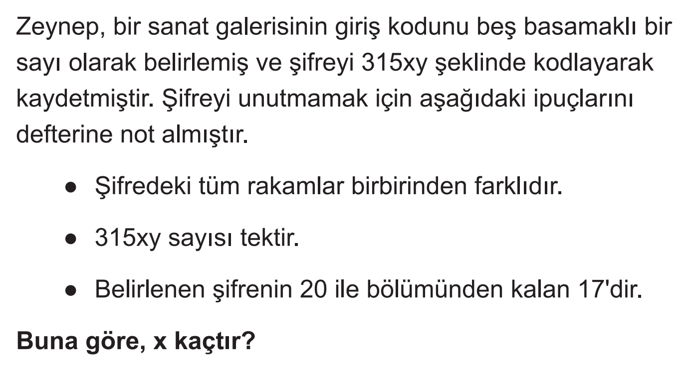
A)1B)3C)5D)7E)9
Çözüm
- 20 ile kalan 17 → son iki basamak $\overline{xy}\in\{17,37,57,77,97\}$.
- Rakamlar farklı ve 3, 1, 5 kullanılmış; $y=7$ olduğundan $x\ne7$.
- $x=9$ → E.
Cevap: E
Soru 14Cevap: E
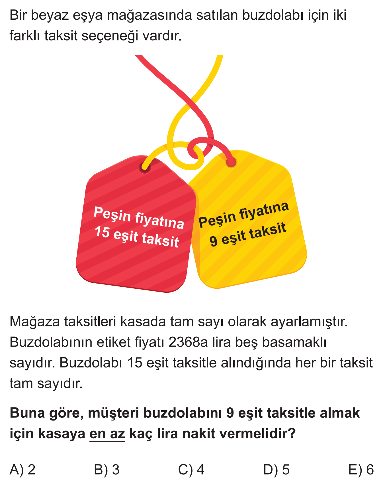
Çözüm
- 15 eşit taksit → $2368a$, 15'e (3 ve 5'e) bölünür: $a\in\{0,5\}$, $19+a$ 3'ün katı → $a=5$.
- $23685$'in 9 ile bölümünden kalan: $2+3+6+8+5=24 \to 6$.
- 9 eşit tam taksit için en az 6 TL nakit → E.
Cevap: E
Soru 15Cevap: C
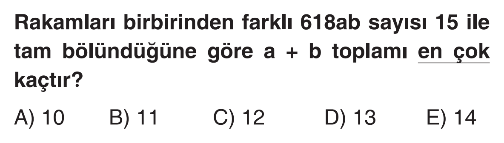
Çözüm
- 15 = 3·5: $b\in\{0,5\}$ ve $6+1+8+a+b$ 3'ün katı → $a+b\equiv0 \pmod 3$.
- Rakamlar farklı (6,1,8 kullanılmış): $b=0 \Rightarrow a=9$; $b=5 \Rightarrow a\in\{4,7\}$.
- En çok $7+5=12$ → C.
Cevap: C
Soru 16Cevap: D
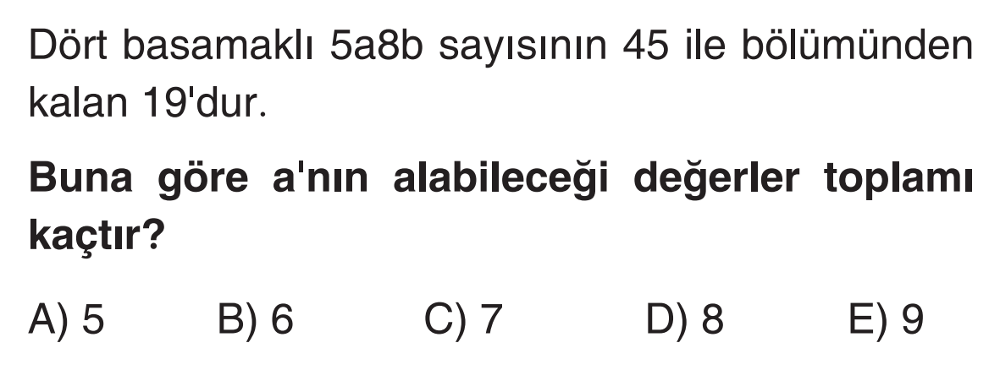
Çözüm
- 45 ile kalan 19 → 5 ile kalan 4, 9 ile kalan 1.
- $b\in\{4,9\}$; $5+a+8+b\equiv1 \Rightarrow a+b\equiv6 \pmod 9$.
- $b=4 \Rightarrow a=2$; $b=9 \Rightarrow a=6$ → $2+6=8$ → D.
Cevap: D
Soru 17Cevap: E
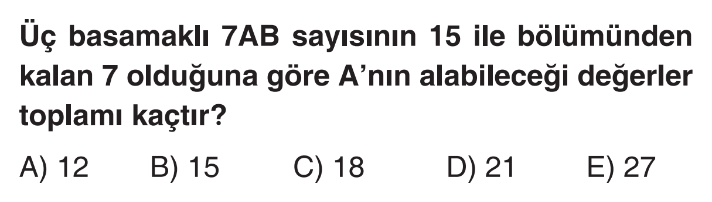
Çözüm
- 15 ile kalan 7 → 5 ile kalan 2 ($B\in\{2,7\}$), 3 ile kalan 1.
- $7+A+B\equiv1 \Rightarrow A+B\equiv0 \pmod 3$: $B=2 \Rightarrow A\in\{1,4,7\}$; $B=7 \Rightarrow A\in\{2,5,8\}$.
- A'nın değerleri toplamı $27$ → E.
Cevap: E
Soru 18Cevap: E
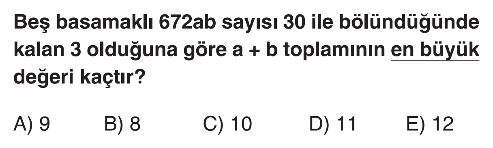
Çözüm
- 30 ile kalan 3 → 10 ile kalan 3 ($b=3$) ve 3 ile kalan 0.
- $6+7+2+a+3=18+a$ 3'ün katı → $a\in\{0,3,6,9\}$.
- En büyük $a+b=9+3=12$ → E.
Cevap: E
Soru 19Cevap: A
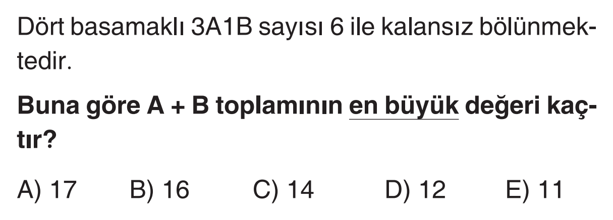
Çözüm
- 6 ile bölünme: $B$ çift ve $3+A+1+B$ 3'ün katı.
- $A+B\equiv2 \pmod 3$; en büyük $A=9$, $B=8$.
- $A+B=17$ → A.
Cevap: A
Soru 20Cevap: B
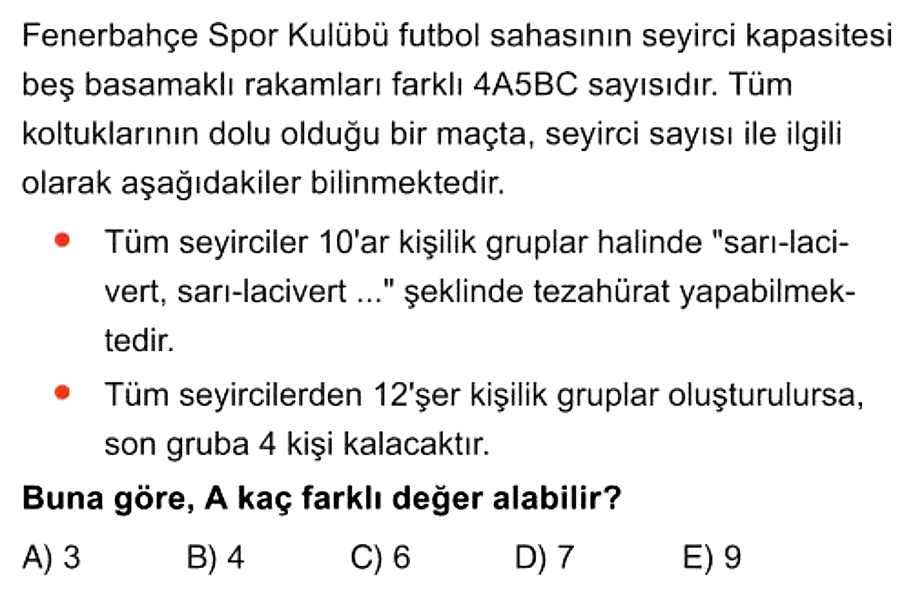
Çözüm
- 10'ar kişilik gruplar → $C=0$; 12 ile kalan 4 → 4 ile kalan 0 ve 3 ile kalan 1.
- 4: $\overline{B0}$ → $B$ çift ($0,4$ dışında): $2,6,8$; 3: $4+A+5+B\equiv1 \Rightarrow A+B\equiv1$.
- $B=2$: $A=8$; $B=6$: $A\in\{1,7\}$; $B=8$: $A=2$ → A: 4 farklı değer → B.
Cevap: B
Soru 21Cevap: D
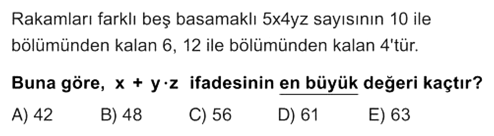
Çözüm
- 10 ile kalan 6 → $z=6$; 12 ile kalan 4 → 4 ile kalan 0 ($\overline{y6}$ → $y$ tek) ve 3 ile kalan 1.
- $5+x+4+y+6\equiv1 \Rightarrow x+y\equiv1 \pmod 3$.
- $x+6y$ en büyük: $y=9$, $x=7$ → $61$ → D.
Cevap: D
Soru 22Cevap: C
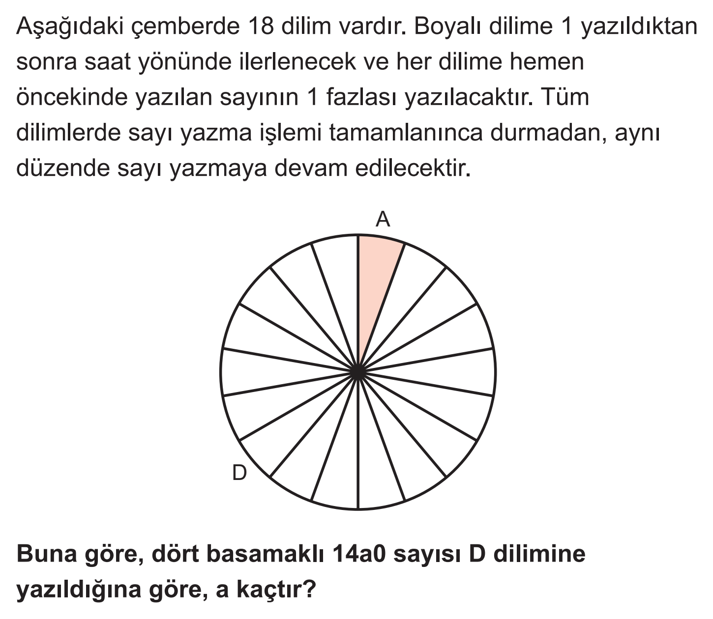
A)5B)6C)7D)8E)9
Çözüm
- 18 dilimlik çemberde sayılar 18'lik devirle döner; D dilimi saat yönünde 12. dilimdir.
- D'ye yazılan sayılar 18'e bölündüğünde 12 kalanını verir → çift ve 9 ile kalanı 3.
- $1+4+a+0\equiv3 \pmod 9 \Rightarrow a=7$ → C.
Cevap: C
Soru 23Cevap: C
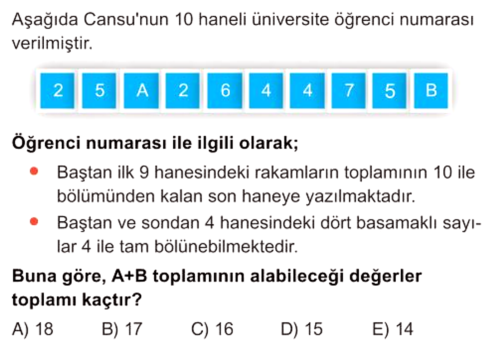
Çözüm
- Son hane B, ilk 9 hanenin toplamının ($35+A$) 10 ile kalanı: $B\equiv5+A \pmod{10}$.
- Baştaki $\overline{25A2}$ 4'e bölünür → $A$ tek; sondaki $\overline{475B}$ 4'e bölünür → $B\in\{2,6\}$.
- $A=7, B=2$ ya da $A=1, B=6$ → $A+B\in\{9,7\}$, toplam 16 → C.
Cevap: C
Soru 24Cevap: E
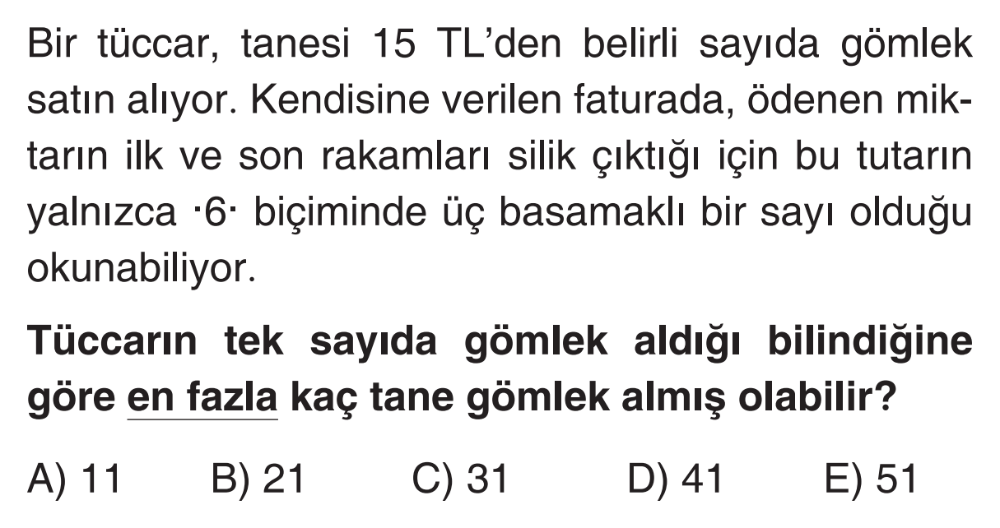
Çözüm
- Tutar $15\cdot k$ ve $k$ tek → tutar 15'in tek katı → 5 ile biter: $\overline{x65}$.
- 3 ile bölünme: $x+6+5$ 3'ün katı → $x\in\{1,4,7\}$.
- En büyük $765 \Rightarrow k=51$ gömlek → E.
Cevap: E